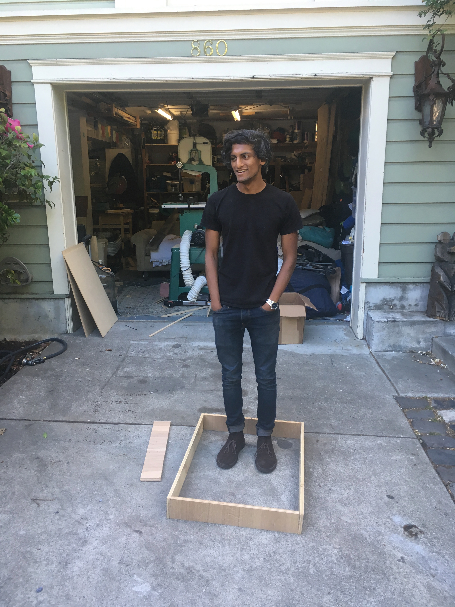
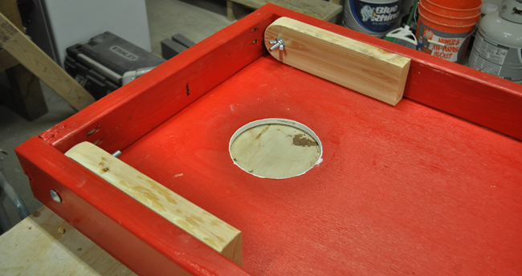
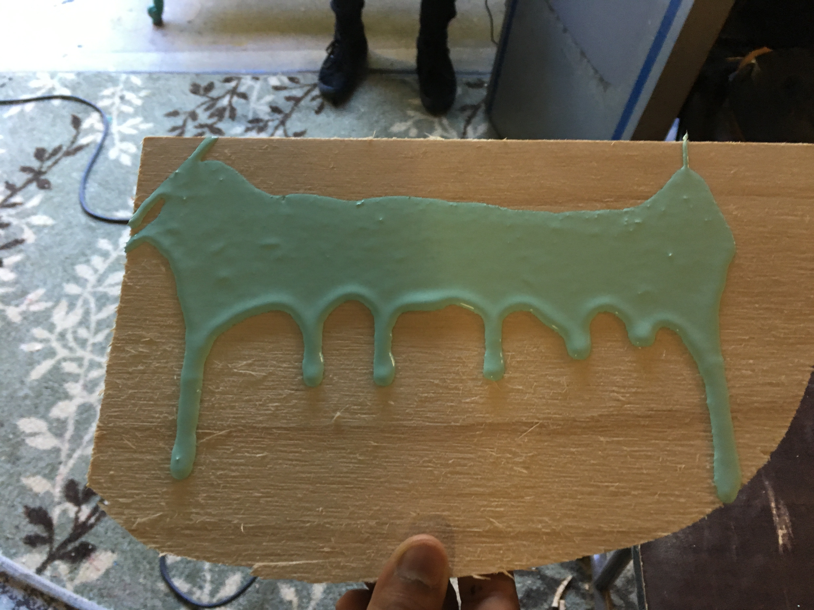

Cornhole Boards
August, 2018
This was a fairy easy and very approachable project that Sav and I took on as a warm-up for a much more ambitious project that we never actually did. But they're still quite pretty and, even if they haven't gotten much use yet, could just as eaily be mounted on a wall and considered art.
Yeah, that blue mess is art. This is our art. Who are you to say?
Anyways, we started with the frame that you see Sav standing in above. We used the standard width of a corn-hole board (there are internationally recognized standard rules and dimensions!) but went a bit shorter on the length, for reasons that I'm forgetting now. Likely, it had something to do with the availablity of scrap wood in our garage. But I digress.
We screwed the frame together with standard wood screws, cut out a piece of quarter-inch plywood to fit on the top, and screwed that down to the frame.
The trickiest part of this project was cutting a regular circle in the middle of each board. The measurements were simple, but the execution was not. Once we had traced the outline of a circle, our method was to use large drill bits (1 inch) to cut a few holes around the outside of each circle, with the perimeter of the circle flush with the line on the inside. That allowed us to stick a jigsaw into the hole and, carefully and slowly, cut the full circle out. That was our first plan, anyways.
It turns out that cutting such a tight circle with your standard jigsaw blade (generally about 1/2 inch) is very tough. The blade wants to go straighter than your circle. So, we resorted to a kind of triangulation method, cutting out the edge in fractions about 1/8 to 1/10 the circumfrance of the circle. Basically, we cut triangles into the center of the circle, as if we were trying to make a many-sided polygon, and then cut and sanded closer and closer to the edge of the circle until it was suitably round. It took a while and resulted in slight imperfections to the circle, but the cuts became much truer the longer we worked at it.
The last stage of the building was attaching legs to the back of the boards so that they can sit at an angle for play. I don't currently have any pictures of this. The one above isn't our project, but it's essentially the same thing. The bases of our legs are cut at a ~30 degree angle, and are bolted into the back side of the frame so that they can rotate out for play, and back parallel with the frame for storage. The only potential pitfall of this step is ensuring that there's enough room for the legs to swing up and back completely - you don't want the leg's corner to catch on the frame.
By far the most fun part of the project was painting it. We started by painting both boards black, and letting them dry. We started experimenting on scrap wood with some different techniques with the goal of getting some interesting, Pollock-esque drip down the front. Again, this was our art.
We started with a leaf blower (see the video below). And while this does create some interseting ripples in the paint, it unfortunately also results in a fairly even coating. We had fun experimenting with it, though.
Ultimately, we decided to be purists, and let the brush and paint take their own path. We dripped
some nice, glossy 8 by 10 color
glossy photographs with a paragraph on the back of each one explaining how they were to be used
as evidence against us blue paint
over the top of the board, and let it do its thing. The result was different each time, but fairly
magestic I would say.